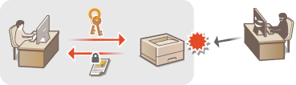
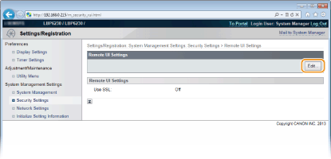

Enabling SSL Encrypted Communication for the Remote UI
Authorized users may incur unanticipated losses from attacks by malicious third parties, such as sniffing, spoofing, and tampering of data as it flows over a network. To protect your valuable data, you can encrypt Remote UI communication between the machine and a Web browser on the computer by using Secure Sockets Layer (SSL). SSL is a mechanism for encrypting data sent or received over the network. SSL must be enabled when the Remote UI is used to make settings for SNMPv3. To use SSL for the Remote UI, you need to set a key pair and enable the SSL function. Have a key pair ready to use (Configuring Settings for Key Pairs and Digital Certificates).

|
|
|
When you use SSL to encrypt communication with the Remote UI, set the time data of the machine. You can use either of the following methods to set the time data.
Use a network time server to adjust the machine's system clock Configuring SNTP
Notify the machine of the currently set time on your computer Synchronizing to the time set on the computer
|
1
Start the Remote UI and log on in System Manager Mode. Starting the Remote UI
2
Click [Settings/Registration].

3
Click [Network Settings]  [TCP/IP Settings].
[TCP/IP Settings].

4
Click [Key and Certificate] in [SSL Settings].

5
Select the key to use from the list of keys and certificates, and click [Register Default Key].


Viewing details of a key pair or certificate
You can check the details of the certificate or verify the certificate by clicking the corresponding text link under [Key Name], or the certificate icon. Verifying Key Pairs and CA Certificates
6
Enable SSL.
|
1
|
Click [Security Settings]
 |
|
2
|
Click [Edit].
 |
|
3
|
Select the [Use SSL] check box and click [OK].
 [Use SSL]
Select the check box to use SSL in communication with the Remote UI. Clear the check box if you do not want to use SSL.
|
7
Restart the machine.
Turn OFF the machine, wait for at least 10 seconds, and turn it back ON.
 |
Starting the Remote UI with SSL enabledIf you start the Remote UI when SSL is enabled, a security alert may be displayed regarding the security certificate. In this case, check that the correct URL is entered in the address field, and then proceed to display the Remote UI. Starting the Remote UI
|